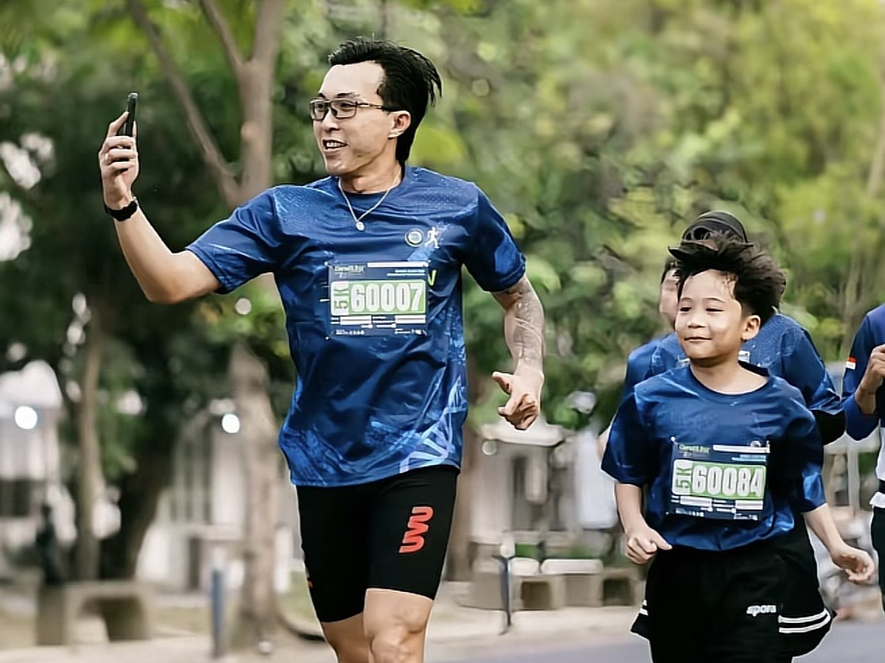

Lari 5K Pertama Bersama Anak di Sleman Running, dr. Tirta: Hari Kemenangan Terbesar

BANDUNG — dr. Tirta menyebut mendampingi anaknya berlari 5 kilometer untuk pertama kalinya di Sleman Running sebagai “hari kemenangan terbesar”. Momen itu ia bagikan lewat TikTok pada Minggu (15/11/2026) dengan caption singkat, “Today, i win.”
“Today adalah hari kemenangan terbesarKu,” tulisnya di video. Ia melanjutkan, “Karena aku bisa jadi partner lari anakku yg pertama di 5km.” Di bagian lain, ia menulis, “Ya akhirnya aku menemukan partner latianku. Ternyata, anakku sendiri :)”
Kisah ini menarik karena kemenangan yang ia maksud bukan soal waktu atau peringkat, melainkan kebersamaan. Lalu, apa kata riset tentang dampak olahraga bersama orang tua bagi anak?
Olahraga Bersama dan Hubungan Orang Tua-Anak
Hubungan yang positif antara orang tua dan anak dikenal sebagai faktor pelindung terhadap masalah emosi dan perilaku anak. Sebuah studi pada orang tua anak usia dini menemukan bahwa aktivitas fisik orang tua yang lebih tinggi berkaitan dengan regulasi emosi yang lebih baik, kesejahteraan subjektif yang lebih tinggi, dan hubungan orang tua-anak yang lebih positif.
Dari sisi kesehatan mental, studi tentang olahraga keluarga di Tiongkok yang terbit di jurnal Behavioral Sciences (2025) menemukan bahwa olahraga anak secara individu maupun olahraga bersama orang tua sama-sama memprediksi kesehatan mental anak yang lebih baik.
Studi Davidson dan tim (2024) di Irlandia Utara juga menemukan bahwa aktivitas fisik anak berkaitan positif dengan kesehatan mental anak. Hubungan serupa tampak antara ayah dan anak laki-laki: aktivitas fisik ayah berkaitan signifikan dengan kesehatan mental anak laki-laki, dan sebaliknya.
Olahraga juga berkaitan dengan harga diri dan kendali diri. Penelitian Bu (2024) pada remaja di Tiongkok menemukan bahwa olahraga menurunkan masalah perilaku eksternal, dengan hubungan orang tua-anak, harga diri, dan kendali diri sebagai penghubungnya. Artinya, olahraga tidak hanya berdampak pada tubuh, tetapi juga pada cara anak memandang dirinya dan mengelola perilakunya.
Olahraga Bersama Sebaiknya Tetap Menyenangkan
Namun, ada syaratnya: olahraga bersama harus menyenangkan, bukan menekan. Studi Behavioral Sciences tadi memberi peringatan penting. Ketika olahraga bersama orang tua dipandang sebagai alat mengejar hasil, anak justru bisa merasakan tekanan, bukan kegembiraan, sehingga manfaat emosionalnya berkurang. Karena itu, pendekatan yang berpusat pada kebersamaan, seperti yang ditunjukkan dr. Tirta, lebih sejalan dengan temuan riset.
Perlu dicatat pula bahwa sebagian besar studi di atas menunjukkan hubungan (asosiasi), bukan bukti sebab-akibat. Beberapa juga dilakukan pada kelompok usia atau negara berbeda, misalnya remaja di Irlandia Utara dan Tiongkok, sehingga hasilnya belum tentu persis sama pada anak Indonesia.
Memulai Aktivitas Fisik Bersama Anak
Bagi orang tua yang ingin memulai, langkahnya tidak harus rumit. Mulailah dari yang ringan, seperti jalan cepat sore hari atau bersepeda, karena pedoman WHO menegaskan bahwa melakukan sedikit aktivitas fisik tetap lebih baik daripada tidak sama sekali.
Ikuti tempo anak dan jadilah partner, bukan pelatih yang menuntut target. Apresiasi usahanya, bukan hanya hasilnya. Acara seperti fun run bisa menjadi pemantik, tetapi kebiasaan kecil yang dilakukan berulang yang akan menjaga manfaatnya.
Seperti yang dituliskan dr. Tirta, kemenangan itu bisa datang dari menemukan partner latihan di rumah sendiri.
Oleh: Fathiya Hanin Zahrani Qolbi
Sumber
Video TikTok dr. Tirta (15 November 2026).
Davidson, G., dkk. (2024). “Parental physical activity, parental mental health, children’s physical activity, and children’s mental health.” Frontiers in Psychiatry, 15. doi:10.3389/fpsyt.2024.1405783
Bu, Y. (2024). “The influence of physical exercise on adolescents’ externalizing problem behaviors: mediating effects of parent–child relationships, self-esteem, and self-control.” Frontiers in Public Health, 12:1452574. doi:10.3389/fpubh.2024.1452574
“Studi olahraga orangtua-anak dan kesehatan mental anak.” Behavioral Sciences (2025), 15(10), 1353. Nama penulis belum tercantum dalam dokumen sumber.
“The association between parental physical activity and the parent–child relationship in early childhood: the serial mediating roles of emotion regulation and subjective wellbeing” (PMC13719594). Nama penulis dan jurnal belum tercantum dalam dokumen sumber. Baca di PubMed Central
World Health Organization. (2020). WHO Guidelines on Physical Activity and Sedentary Behaviour. Geneva: World Health Organization.